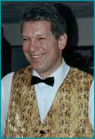
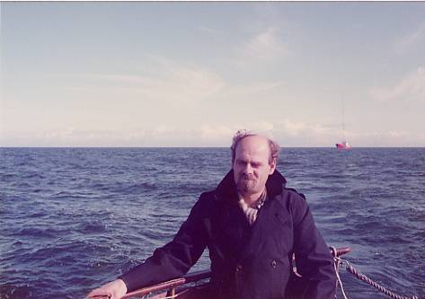

Wisten jullie: Dat wij een hele sportieve familie hebben. Ik kom zoveel personen op sportclubs tegen die de naam van Coesant dragen. Alleen zijn het nog maar namen, ik hoop dat ik binnenkort ook weet wie er achter die namen schuilen!!!!
Wisten jullie: Dat ik op zoek ben naar mensen die de naam van Coesant dragen zodat deze pagina een beetje voller word.
Wisten jullie: Dat een van de eigenaren van muziekcafé de Paap in Den Haag Ferry van Coesant heet. En dat hij misschien wel een volle neef van mij is.
Wisten jullie: iets van dit bericht:
Achterkant knipsel, bron onbekend. Waarschijnlijk een vakbonds- of
gemeenschapsblad uit Delft (Calvé?)
Familieberichten:
GISTFABRIEK
Geb. 7-11-1928 Willem, zoon van P. SAARBERG en W. van RHEENEN
Geb. 22-11-1928 Johannes Jacobus Antonius, zoon van A.P. JUTTE en A.M.
BRINKHOF
Geb. 26-11-1928 Hendrika Louise, dochter van K. van COESANT en L.
Felser
35-jarige echtvereeniging: 13-12-1928 J.S. SCHIMMEL, gepensionneerde,
en C.J. LUKEN, ouders van W.A. SCHIMMEL en C.S. SCHIMMEL
25-jarige dienstvervulling: 27-11-1928 D. de RIDDER
25-jarige dienstvervulling: 30-11-1928 J.S. van KUIJEREN
25-jarige dienstvervulling: 14-12-1928 W. VUURMAN
Bevorderd tot den rang van Baas, met ingang van 1-9-1928 H.F.
Wisten jullie: Dat sinds ik door een aantal zoekmachines te vinden ben , ik al
heel wat e-mails spontaan ontvangen heb. Leuk hoor het werkt.
Wisten jullie: Iets van dit bericht????

Hello folks, my name is Andre Van Coesant, and I'm looking forward to working with you.
I have been entertaining customers since 1989, as a special events dj/mc, as well as a club dj throughout northern NH.
My wife and I also operated a teen-dance club for three years.
My first two years as a events dj, I gained experience through working as an apprentice,and attended various music, entertainment, wedding etiquette seminars, as well as production of two local bridal shows.
My music library ranges from Big Band to Top 40, and all those great dance songs in between.
Since 1989, I have developed a personal style of event entertainment, and will work closely with YOU, to create a fun and memorable day for you!
You can rest assure: I have the knowledge and experience necessary to play the right music at the right time, and to engage your guests in the fun with a variety of party favors, or take a more low key approach. Thank your, and have a wonderful event!
Wisten jullie: Dat Suze en haar dochter Haike best wel heel creatief zijn, dit vond ik op het internet.
Prijswinnaars hoedenwedstrijd
14 Feb 2002
De prijswinnaars van de hoedenwedstrijd zijn:
Dhr/mevr. D. Bakker de Roo uit Hijken
Mevrouw Bal uit Oosterhout
Haike van Coesant uit Hengevelde
Suze van Coesant uit Hengevelde
Omer Hannes uit Diest (België)
Sylli Hats uit Breda
Dhr/mevr. G. J. Hilferink uit Zelhem
Jantje Hoest uit Bovensmilde
Mevrouw De Jonge Everaard uit Sluis
Carmen op Mijsert uit Hengelo (Ov)
Joke Otte uit Lichtenvoorde
Mevrouw M. van Plaggenhoef uit Nijkerk
Geertje de Roo uit Harderwijk
Mevrouw A.H. Span-Heidstra uit Makkinga
Mevrouw J. J. de Waal uit Poortugaal
Allemaal van harte gefeliciteerd!!
Wisten jullie: Dat ik door aan deze site te beginnen weer een leuk contact met mijn neef Eduard heb gekregen, ik denk dat we elkaar zo'n 30 jaar niet hadden gezien. Eduard is het oudste kind van, Anna Hendrika van Coesant (Annie) de zus van mijn vader, en Johannes Cornelis Adrianus van Loon (Arie),
Dit is mijn neef Eduard van Loon tijdens een trip naar het radioschip, de Ross Revenge van Radio Caroline in 1984 nabij de oostkust van Engeland.
